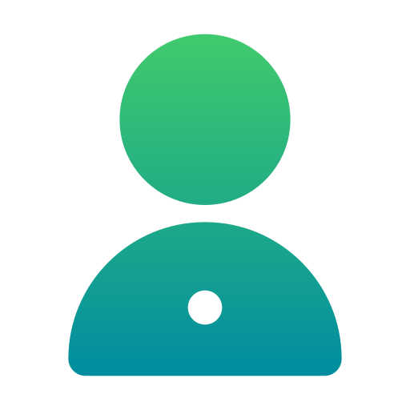

<ion-app>
  <ion-menu contentId="main-content" type="overlay">
    <ion-content>
      <div class="menu-header-bg"></div>
      <div class="header-content">
        
        <ion-label>
          <h2>م/المقدشي عبدالمغني</h2>
          <p>`مهندس برمجيات</p>
        </ion-label>
      </div>

      <div class="action-boutton">
        <ion-button >
          دخول الى النظام
          <ion-icon name="cloud-done-outline"></ion-icon>
        </ion-button>
      </div>
      <ion-list class="meun-itmes" lines="none">
        <ion-item>
          <ion-icon name="pie-chart-outline" [routerLink]="['/home']" routerLinkActive="active"></ion-icon>لوحة التحكم
        </ion-item>
        <ion-item>
          <ion-icon name="newspaper-outline"></ion-icon>التقارير
        </ion-item>
        <ion-item  [routerLink]="['/weather']" routerLinkActive="active">
          <ion-icon name="browsers-outline" ></ion-icon> ارسال البيانات الى
          السرفر
        </ion-item>
        <ion-item>
          <ion-icon name="server-outline"></ion-icon>حفظ الى قاعدة البيانات
        </ion-item>
        <ion-item>
          <ion-icon name="construct-outline"></ion-icon>النسخ الاحتياطي
        </ion-item>

        <ion-item>
          <ion-icon name="exit-outline"></ion-icon> تسجيل الخروج
        </ion-item>
      </ion-list>
    </ion-content>
    <ion-footer>
      <div class="footer-text">
        جميع الحقوق محفوظة &copy;
        <a href="https://litesoftit.com/">لايت سوفت</a>
      </div>
    </ion-footer>
                 
  </ion-menu>
  <ion-router-outlet id="main-content"></ion-router-outlet>
</ion-app>
